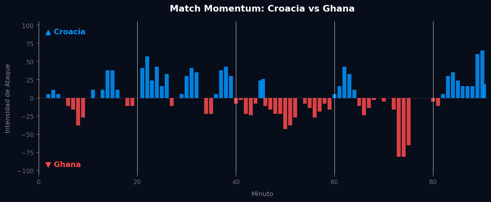
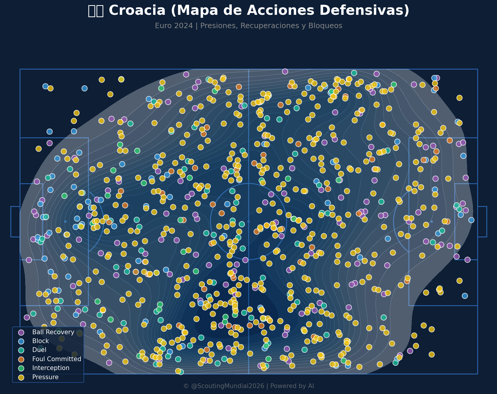
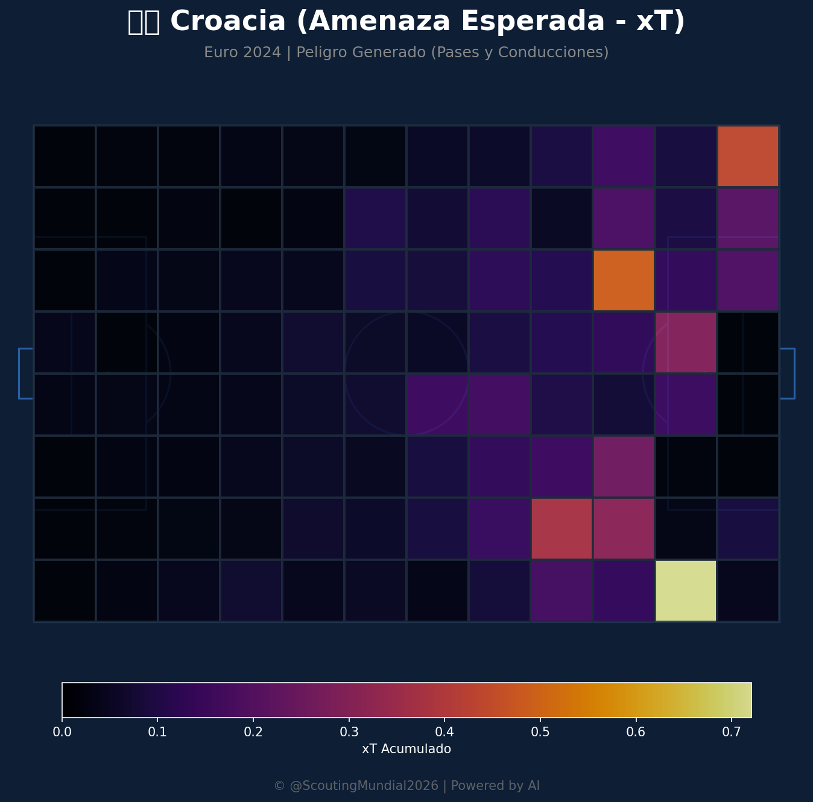
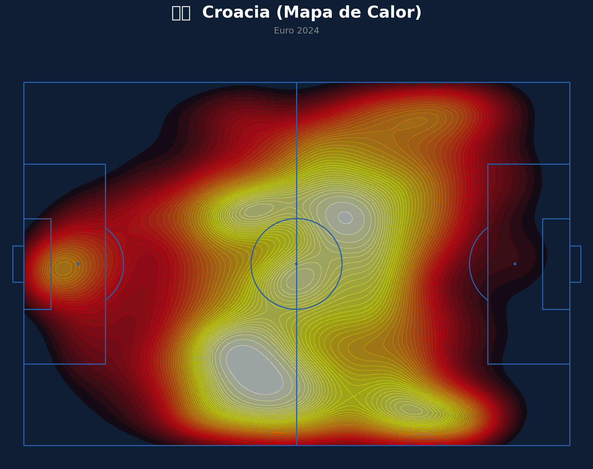
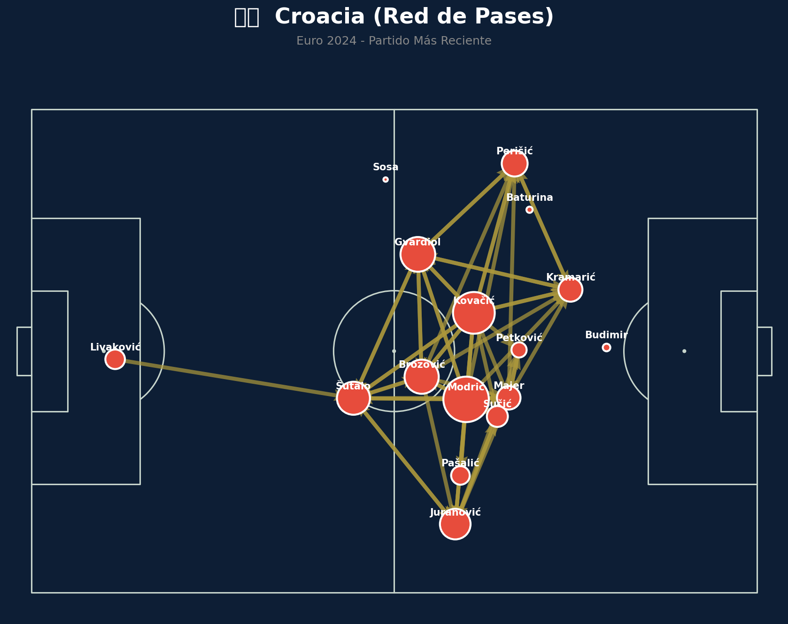

Grupo L
 Ghana
Ghana
Croacia vs Ghana
📅 2026-06-27 · 🕒 19:00 (Local)
Croacia

2 - 1
FINALIZADO
Ghana
📅 2026-06-27 · 🕒 19:00 (Local)
Ghana
El enfrentamiento en el Grupo L entre Croacia y Ghana fue un pulso táctico y emocional que se resolvió por la mínima diferencia. Croacia, con su habitual dominio del balón y construcción paciente, logró adelantarse en el marcador gracias a un gol que reflejó su calidad individual en los metros finales. Sin embargo, Ghana no se amilanó, mostrando una admirable capacidad de reacción y explotando su velocidad y potencia física. Consiguieron el empate en un momento crucial, inyectando drama al partido y elevando la intensidad. La resiliencia croata, apoyada en la experiencia de sus veteranos, les permitió encontrar el gol de la victoria en la recta final, sellando un triunfo ajustado pero vital que reflejó su capacidad para gestionar los momentos de mayor presión.
El flujo de intensidad en este partido fue un reflejo exacto del drama vivido en el campo. Ghana dominó la intensidad el 40.4% del partido, alcanzando un pico máximo de ataque de 81.00 en el minuto 73'. Este fue el momento de mayor empuje africano, donde probablemente buscaron y consiguieron el gol del empate, aprovechando su velocidad en transiciones y poniendo en aprietos la defensa croata. Croacia, por su parte, aunque dominó la intensidad en un 41.5% del encuentro, su intensidad máxima llegó más tarde, en el minuto 90' con un 65.00. Este dato sugiere que el Match Point (Punto Crítico) del partido fue el gol de la victoria croata en los minutos finales, o una jugada decisiva que aseguró el resultado. Fue un golpe táctico y psicológico que decantó la balanza, demostrando la capacidad de Croacia para capitalizar sus oportunidades en los momentos más calientes, frustrando el esfuerzo ghanés y sellando su triunfo.

Croacia mostró nuevamente su maestría en la posesión y el control del ritmo, priorizando la circulación del balón para desgastar al rival y encontrar espacios. Su mediocampo, liderado por sus experimentados cerebros, dictó los tiempos del partido, aunque por momentos carecieron de la verticalidad necesaria para traducir ese dominio en ocasiones claras. Defensivamente, fueron sólidos en el juego posicional, pero mostraron cierta vulnerabilidad a la velocidad en las transiciones de Ghana, especialmente tras las pérdidas en campo rival. Su virtud principal fue la resiliencia mental y la capacidad para golpear en los momentos decisivos, demostrando una eficacia clínica que les valió el triunfo.
Ghana planteó un partido valiente, apostando por su superioridad física y velocidad en las bandas y el ataque. Fueron efectivos en la presión alta por momentos, logrando desestabilizar la salida de balón croata y generar situaciones de peligro en transiciones rápidas. Su gol fue un claro ejemplo de su potencia y determinación ofensiva, demostrando que pueden ser una amenaza para cualquier defensa. Sin embargo, su principal falla radicó en la irregularidad defensiva, con algunos desajustes posicionales y falta de contundencia en el marcaje que Croacia supo explotar, especialmente en la jugada del gol de la victoria que evidenció una desconcentración crucial.
El duelo táctico entre ambos entrenadores fue fascinante, con Croacia apostando por la experiencia y el control, y Ghana por la energía y la explosividad. La propuesta de Croacia, aunque a veces predecible, demostró ser efectiva gracias a la calidad individual y la capacidad para mantener la calma bajo presión. Ghana, por su parte, dejó una excelente imagen de equipo combativo que no se rinde. El marcador final de 2-1 es un veredicto justo y lógico. Si bien Ghana fue competitiva y tuvo sus momentos de dominio, Croacia exhibió una mayor madurez táctica y una eficiencia superior en las áreas clave, capitalizando mejor sus oportunidades y gestionando los últimos minutos con la sangre fría necesaria para asegurar tres puntos de oro.






